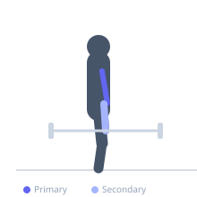

Exercise guide / Cheat Curl
Cheat Curl
A barbell curl variation that uses a slight body swing to initiate the movement, allowing the lifter to use heavier loads than a strict curl. The overloaded eccentric phase provides a strong hypertrophy stimulus for the biceps as the weight is lowered under control, making cheat curls a classic bodybuilding technique.
Primary muscles
biceps brachii long head
biceps brachii short head
Secondary muscles
brachialis
brachioradialis
Stabilizers
flexor carpi radialis
flexor carpi ulnaris
Equipment
Standard Barbell
Optional
EZ-Curl Bar


Starting position
- Stand holding a barbell with an underhand grip, arms extended down. Feet shoulder-width apart.
Setup
- Pick up a barbell heavier than you would use for strict curls. Stand with feet shoulder-width apart and core engaged.
Steps
- Step 1: Use a slight hip and knee dip to initiate momentum and swing the bar upward.
- Step 2: Continue the curl motion, bringing the bar to the chest.
- Step 3: Lower the bar very slowly and under strict control over 3 to 4 seconds.
- Step 4: At the bottom, use the next swing to begin the following rep.
Coaching cues
- Use the momentum to get it up
- Take your time on the way down
Breathing
- Exhale during the curl. Inhale slowly during the controlled eccentric descent.
Range of motion
- Full range of curl at the top. Fully extend at the bottom before the next rep.
Tempo
- 1-0-4-0 (explosive concentric, 4s controlled eccentric)
Common mistakes
- Excessive body English that turns the movement into a full-body swing
- Not controlling the eccentric — the eccentric is the purpose of the exercise
Safety
- The weight should be heavier than a strict curl but not so heavy that form completely breaks down
- Do not use this technique as a crutch — it is a deliberate advanced technique
Training
- hypertrophy: 8–15 reps
- hypertrophy: 3–4 sets
- Rest: {'hypertrophy': 90}